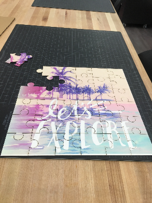
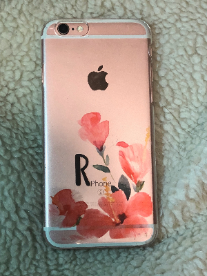

The Garment Printer
The project involved developing individual and original creativity skills to fabricate the design for your t-shirt.
I made my design in adobe photoshop using various brush sizes, and text fonts in the background.
After making the design, you are supposed to export it using the flash drive to the garment printer.
to make the print stay and not be creased the t-shirt is supposed to be ironed and then put on the garment printer shaft the garment is analysed by the printer and you get your final design in a few minutes.
ironing after getting the final result is suggested to make the print last longer
UV Printer - Jigsaw Puzzle
The puzzle required a 2D layout in the fusion 360 and making arcs by trimming parts of straight lines to create jigsaw puzzle pieces.
The layout was then exported through a flash drive in the uv printer,
The cardboard size was laid so that the image would cover the cardboard fully.The printer scanned the boundaries of the cardboard to get the exact sizing and identifying the edges.
After the print is complete the cardboard is placed in the laser cutting so that the vector components cam be cut and the puzzle pieces can be distinguished.


Iphone Case
The making of the phone case involves measurement of the clear iphone case to get the layout out of the page you want to design on.
The picture is then imported on the page layout and the necessary adjustments required.
The pattern just like the tshirt is exported and the scaling done.
The final product can be cherished by putting it on your phone.

The making of the phone case involves measurement of the clear iphone case to get the layout out of the page you want to design on. The picture is then imported on the page layout and the necessary adjustments required.
The pattern just like the tshirt is exported and the scaling done. The final product can be cherished by putting it on your phone.